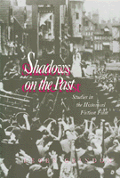

A new genre of film is identified and explored
A new genre of film is identified and explored


 A new genre of film is identified and explored
A new genre of film is identified and explored

|  |
Shadows on the PastStudies in the Historical Fiction FilmLeger Grindonpaper EAN: 978-1-56639-182-5 (ISBN: 1-56639-182-2) |
Outstanding Academic Title, Choice, 1995
"This book is a unique and significant contribution to scholarship. It is the first work to deal with the historical film in meaningful terms, and will no doubt help to set the terms by which such films will be discussed in the future."
—Robert A. Rosenstone, California Institute of Technology
Studying popular Hollywood films from Gone With the Wind to Reds and such distinguished European films as La Marseillaise and The Rise to Power of Louis XIV, Leger Grindon examines how historical fiction films interpret the present through a representation of the past.
The historical fiction film is characterized by a set of motives and, Grindon argues, deserves to be considered a genre unto itself. Appropriation of historical events can insinuate a film's authority of its subject, veil an intention, provide an escape into nostalgia, or direct a search for knowledge and origins. Utilizing the past as a way of responding to social conflicts in the present, Grindon shows how the genre promotes a political agenda, superseding the influence of scholarship on the public's perception and interpretation of history.
Excerpt available at www.temple.edu/tempress
"Some of the keys to the meaning latent in the historical film can be found by looking at the motives behind the displacement of the present to the past: an appeal to authority, a veiling of intention, an escape into nostalgia, and a search for origins. The appeal to authority is reinforced by embellishing the historical film with scholarly references, period detail, or antiquated manners. Such rhetorical gestures often present history as an avenue to the truth and serve to verify the meaning of the text. This approach is evident in The Birth of a Nation (1915), which quotes a historical work by Woodrow Wilson and duplicates famous Civil War photographs in its compositions. History as a veil hides controversial positions and defuses audience resistance or political censorship. Ernst Lubitsch used a historical camouflage in his post-World War I German productions Madame Dubarry (1919) and Anna Boleyn (1920). Drawing from the history of France and England allowed Lubitsch to snipe at the recent enemy and protected him from German censors who might otherwise have objected to the films' cynical view of patriotic duty and social hierarchies. The escape into nostalgia seeks a 'golden age,' a 'paradise lost.' Motivated by a regressive impulse to return to the past, such a history implicitly criticizes the present as deficient in the values and energy that fortify culture. The picnic at Tara that opens Gone With the Wind (1939) presents a bucolic age before the outbreak of the Civil War. More recently, JFK (1991) alludes to an age of innocence and integrity before the political shocks of the 1960s transformed the nation. The search for origins seeks to discover the foundation of a civilization's achievement and calls for a reaffirmation of the strengths of its forebears (as in Young Mr. Lincoln, 1939). The search may also take a critical view, attempting to uncover the source of a current malaise or a discomforting dilemma, such as the anxieties over colonialism, 'the third world,' and the post-World War II Western hegemony apparent in Lawrence of Arabia (1962)."
—From Chapter 1, "Analyzing the Historical Fiction Film"
"Thoughtful and detailed, this [is] an excellent work."
—Choice
Illustrations
Acknowledgments
1. Analyzing the Historical Fiction Film
2. The Politics of History: La Marseillaise
3. Hollywood History and the French Revolution: From The Bastille to The Black Book
4. Risorgimento History and Screen Spectacle: Visconti's Senso
5. The Politics of the Spectacle: The Rise to Power of Louis XIV
6. Politics and History in Contemporary Hollywood: Reds
Coda
Notes
Index
Leger Grindon is Assistant Professor of Film and Television Studies at Middlebury College.
Culture and the Moving Image, edited by Robert Sklar.
The Culture and the Moving Image series, edited by Robert Sklar, seeks to publish innovative scholarship and criticism on cinema, television, and the culture of the moving image. The series will emphasize works that view these media in their broad cultural and social frameworks. Its themes will include a global perspective on the world-wide production of images; the links between film, television, and video art; a concern with issues of race, class, and gender; and an engagement with the growing convergence of history and theory in moving image studies.
© 2015 Temple University. All Rights Reserved. This page: http://www.temple.edu/tempress/titles/929_reg.html.